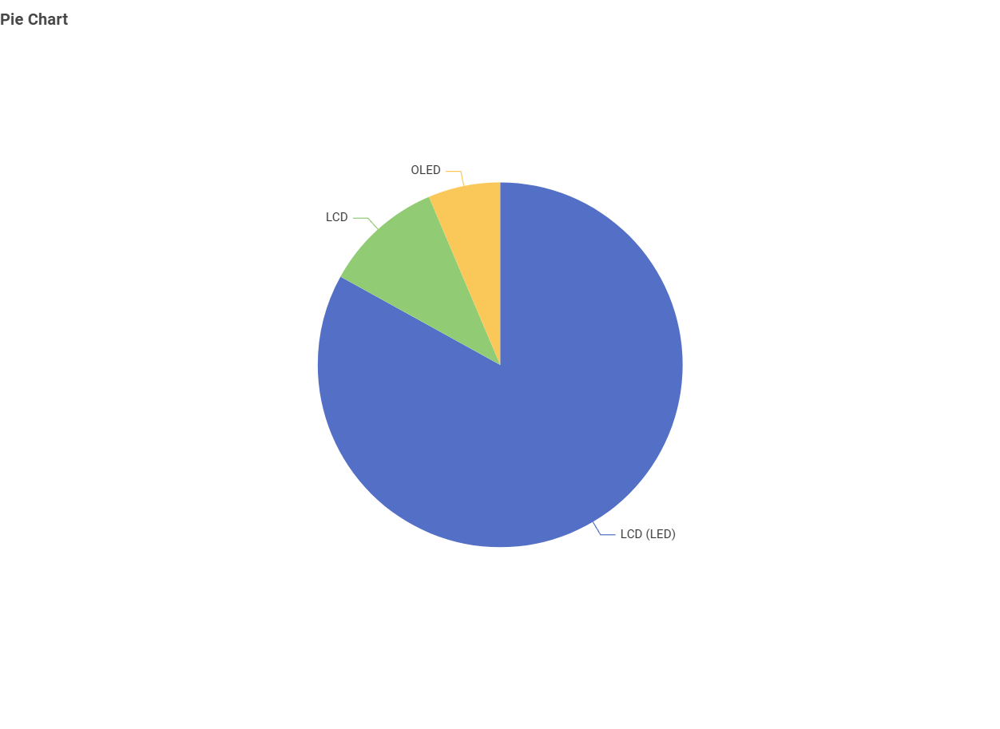

Who is this for?
Australian consumers who are planning to buy a TV and want simple information about common TV choices and energy use.
What will we look at?
-Screen technology
-Screen size
-Brand choices
-Power consumption
-Energy star rating
What Screen Technologies Are Available?
What type of TV screen technologies are currently available in Australia and which are the most frequent?
The dataset contains LCD, LCD (LED), and OLED televisions.
LCD (LED) is the most common technology with 3,797 models. LCD has 484 models and OLED has 292 models.

What Screen Sizes Are Most Common?
What screen sizes are currently available, and which are the most frequent?
65-inch is the most frequent screen size with 773 models, followed closely by 55-inch with 762 models.
The next most frequent category is 75-inch with 629 models.

Which Brands Have the Most Models?
Which brands have the greatest number of different television models?
KOGAN has the largest number of models with 809.
It is followed by LG with 723 models and Samsung Electronics with 699 models.

Which Screen Technology Uses the Least Power?
Which type of screen technology consumes the least amount of power?
The comparison uses the median average-mode power for each screen technology.
LCD has the lowest median power at 71.347.
LCD (LED) has a median value of 106, while OLED has the highest of the three at 112.7.

How does Screen Size Affect Power Use?
What is the relationship between screen size and power use?
The scatter plot shows a positive relationship between screen size and average-mode power.
As screen size increases, televisions generally use more power.

Does Screen Size Affect Star Rating?
What is the relationship between star rating and screen size?
The star ratings are spread across many different screen sizes.
The scatter plot does not show a clear upward or downward relationship between screen size and star rating.

Key Takeaway
LCD (LED) is the most common screen technology, while 65-inch is the most frequent screen size. The data also shows that larger TVs generally consume more power.
Consumers should compare screen size, screen technology and energy rating when choosing a TV.